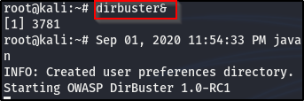

Now we are going to use another new tool, called dir buster, to do a little directory busting. There are other tools out there taht do the same thing, like dirb, gobuster. You don't necessarily have to keep using dirbuster, try other similar tools and pick the one you like the best.

Here's how to run it.

Now, lets fill in the detials. Our target url is what we used in the nikto scan and we have to follow the syntax, as shown above the url field space, adding port 80. Like this:

Click go faster on the threads and pick a list, go ahead to browse, to your base folder, click your user (usr folder),, share, and start typing wordlist and it'll bring out word list, click on it and you'll see dirbuster, click on it and start with the small list and if you find nothing, then you canmove up to the meduim list.

To select a wordlist file, click onbrowse and change from root to / and click on usr, then share and search for wordlists and oprn the dirbuster folder, that has different sizes of wordlists files in it and mke a choice, I chose the small.txt wordlist file.

So, we're going out to web directories and we using the wordlists, that has lots of different well known directories, and this tool is going to navigate to all the directories in the wordlists. It'll also look for specific file extentions, for instance, our target is on an Apache website and Apache rns PHP

You can put in more extension types but as many as you put in, it'll run every directory in the wordlist against the extension types, making the search longer. It's very important to just put in file extensions that you absolutely need. I left mine to only PHP extension types. Click start, it might take a while to finish up, depending on how large the website you're scanning is or how big your wordlist is, how many options you choose, and as you can see, it's already finding results:

Here's a challenge for you: Dig through the results you get back from the scan (wait till scan is finished), which is the real enumeration, to determine if there's anything of value there, useful service infomation, etc